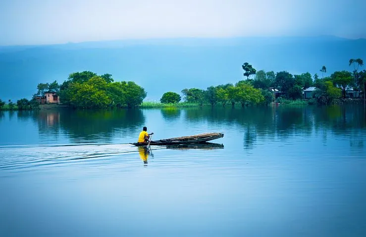

Sylhet
Sylhet, located in the northeastern part of Bangladesh, is renowned for its stunning natural beauty and rich cultural heritage. The region is characterized by its rolling tea gardens, lush green hills, and vibrant landscapes, making it a popular destination for both domestic and international tourists. Sylhet is also known for its unique blend of traditional Bengali culture and the influences of the diverse communities that have settled in the area over centuries, including the Khasi and Manipuri tribes. The city is home to several notable landmarks, such as the Shrine of Hazrat Shah Jalal, one of the most revered pilgrimage sites in the country, and the picturesque Ratargul Swamp Forest, a freshwater swamp forest and one of the few swamp forests in Bangladesh.
Additionally, Sylhet's cuisine, which features distinctive dishes and flavors, is a highlight for visitors. The combination of natural beauty, cultural richness, and historical significance makes Sylhet a captivating and memorable place to explore. Sylhet, a prominent city in northeastern Bangladesh, offers a unique blend of natural splendor and cultural richness. Known as the "Land of Two Leaves and a Bud," Sylhet is famed for its extensive tea gardens, which produce some of the finest teas in the world. The tea estates, with their manicured rows of tea plants stretching over undulating hills, create a picturesque landscape that draws numerous visitors.
The region is also blessed with an array of natural attractions.
One of the most notable is the Jaflong, located on the border with India, where the serene Piyain River flows against a backdrop of rolling hills and the Khasi mountains. The area is renowned for its stone collection activities and the vibrant local market. Nearby, the Lalakhal, with its crystal-clear blue waters, offers boat rides that allow visitors to immerse themselves in the tranquil beauty of the area.
Sylhet's cultural and spiritual significance is underscored by its numerous shrines and religious sites. The Shrine of Hazrat Shah Jalal, a revered Sufi saint, attracts thousands of pilgrims each year. The shrine of his nephew, Hazrat Shah Paran, is also a significant spiritual site. These shrines not only serve as places of worship but also as centers of social and cultural gatherings, reflecting the deep-rooted spiritual traditions of the region.
COX'S BAZAR

Cox's Bazar, located on the southeastern coast of Bangladesh, is renowned for having the longest natural sea beach in the world, stretching an impressive 120 kilometers along the Bay of Bengal. This picturesque town is a major tourist destination, attracting visitors with its golden sandy beaches, vibrant local culture, and breathtaking sunsets. The beach is perfect for leisurely walks, sunbathing, and various water sports, including surfing and swimming. Beyond the beach, Cox's Bazar offers a range of attractions such as Himchari National Park, known for its scenic waterfalls and diverse wildlife, and Inani Beach, famous for its unique coral stones and clear blue waters. The nearby island of St. Martin's, accessible by boat, provides an idyllic getaway with its serene beaches and lush greenery. Cox's Bazar is also a hub for exploring the unique culture and traditions of the local Rakhine community and the picturesque fishing villages that dot the coastline. With its combination of natural beauty and cultural richness, Cox's Bazar stands out as a must-visit destination in Bangladesh.
Cox's Bazar, a picturesque coastal town in southeastern Bangladesh, is famed for its record-breaking natural sea beach, the longest in the world, extending over 120 kilometers. This stunning beach, with its unbroken stretch of golden sand and rolling waves from the Bay of Bengal, is a magnet for tourists seeking relaxation and adventure alike. The beach is divided into several sections, each with its unique charm. Laboni Beach, the main tourist hub, is lively with activities, shops, and eateries, while quieter spots like Himchari Beach and Inani Beach offer tranquil escapes with spectacular views and unique coral stones.
The town itself is steeped in history and culture. The local fishing communities, including the indigenous Rakhine people, add a rich cultural tapestry to the area. Visitors can explore traditional markets, sample local seafood delicacies, and witness the daily lives of the fishermen.
Cox's Bazar also serves as a gateway to several natural and historical attractions. Himchari National Park, a short drive from the town, features lush greenery, cascading waterfalls, and a rich diversity of flora and fauna. The park is a haven for bird watchers and nature enthusiasts. Further along the coast, Inani Beach offers a serene environment with its clear blue waters and rocky outcrops, ideal for photography and picnics.
St. Martin's Island, known locally as Narikel Jinjira (Coconut Island), is another popular destination accessible by boat from Teknaf. This small coral island, about 9 kilometers south of the mainland, is renowned for its crystal-clear waters, vibrant marine life, and serene coconut groves. It’s a perfect spot for snorkeling, scuba diving, and exploring coral reefs.
Cox's Bazar is also home to a variety of accommodations, ranging from luxury resorts to budget-friendly hotels, catering to all types of travelers. The town's bustling markets, such as the Burmese Market, offer an array of souvenirs, handmade crafts, and local textiles.